Each page below is one scanned page of the songbook (Hard To Say I'm Sorry, printed pages 14 to 17; Love Theme from St. Elmo's Fire, 36 to 38; Theme from The Color Purple, 39 to 43; Water Fountain, 92 to 93; Katie's Theme, 102 to 103) beside what three optical music recognition engines read from it. Everything shown is an excerpt: the top of each scanned page, the first eight bars of each engine's MusicXML, and the first thirty seconds of each playback; the numbers were measured on the whole pages. The MusicXML is each engine's output as graded, after one conversion so the same grader scores all three; the MP3 is that MusicXML played back at a fixed 80 beats per minute by the same piano soundfont, peak-normalised, repeats flattened. The pages carry no tempo, so 80 is an assumption, and no engine returns chord symbols, so none of the playbacks has them.
The percentages are agreement with homr's reading, since no exact transcription of these pages exists: a note counts as agreeing when its pitch matches homr's in sequence. homr is the reference because it read every note of the rendered benchmark in experiment 017, but it is not truth; where the three disagree, the scan decides.
Follow the first bars of the page excerpt with the homr playback. If homr is wrong there, the agreement numbers for the other two are measured against a wrong reference at that spot.
Play the Transcoda and LEGATO readings of the same bars. The flagged pages are the ones where a model looped or collapsed; those are the cases behind the numbers quoted in the journal.
Open any MusicXML excerpt (served as .xml; MuseScore opens it) to see the first eight bars of the reading as a score.
At a glance right hand / left hand: homr's attack counts, then each model's exact agreement with homr
Page homr attacks RH / LH Transcoda, exact agreement RH / LH LEGATO, exact agreement RH / LH page 04 Hard To Say I'm Sorry, p. 1 125 / 4517 measures 62% / 80%24 measures 57% / 71%15 measures page 05 Hard To Say I'm Sorry, p. 2 117 / 12618 measures 70% / 94%18 measures 72% / 75%18 measures page 06 Hard To Say I'm Sorry, p. 3 127 / 9715 measures 52% / 90%18 measures 79% / 77%17 measures page 07 Hard To Say I'm Sorry, p. 4 172 / 8418 measures 74% / 93%18 measures 70% / 67%18 measures page 26 Love Theme from St. Elmo's Fire, p. 1 46 / 12716 measures 43% / 0%20 measures 83% / 52%18 measures page 27 Love Theme from St. Elmo's Fire, p. 2 91 / 11123 measures 36% / 96%22 measures 84% / 92%22 measures page 28 Love Theme from St. Elmo's Fire, p. 3 99 / 13721 measures 33% / 97%21 measures 70% / 89%22 measures page 29 Theme from The Color Purple, p. 1 36 / 5512 measures 78% / 95%21 measures 56% / 0%24 measures, ran away to the token cap page 30 Theme from The Color Purple, p. 2 58 / 9717 measures 88% / 94%17 measures 69% / 77%19 measures page 31 Theme from The Color Purple, p. 3 68 / 9219 measures 85% / 96%19 measures 79% / 79%19 measures page 32 Theme from The Color Purple, p. 4 50 / 3515 measures 67% / 94%20 measures 60% / 0%87 measures, ran away to the token cap page 33 Theme from The Color Purple, p. 5 71 / 7020 measures 83% / 94%21 measures 79% / 83%20 measures page 82 Water Fountain, p. 1 64 / 5117 measures 8% / 0%196 measures, ran away to the token cap 69% / 0%63 measures, ran away to the token cap page 83 Water Fountain, p. 2 73 / 6819 measures 0% / 0%1 measures, collapsed 85% / 93%19 measures page 92 Katie's Theme, p. 1 17 / 010 measures, reference incomplete 0% / n/a122 measures, ran away to the token cap 12% / n/a15 measures page 93 Katie's Theme, p. 2 140 / 11819 measures 36% / 24%24 measures 55% / 55%42 measures, ran away to the token cap
From the recording, not the page Theme from The Color Purple (Quincy Jones, Rod Temperton, Jeremy Lubbock) · the owner's piano recording (3:30) transcribed by the ByteDance piano transcription model (Kong et al., 2021)
This reader hears the performance instead of reading the page, so its playback keeps the recording's own timing and dynamics; the pedal it found is in the MIDI but not in this playback, which renders notes only. The MusicXML is a rough score: the notes are quantised to a 4/4 grid at 120 bpm and split into two staves at middle C, because a freely played ballad has no fixed grid to snap to. The MIDI with the real timing is at the experiment folder (028, audio-transcription) and imports into Logic as it is. The recording is a different arrangement from the songbook pages below (printed 39 to 43), so the two cannot be compared note for note; the tune is the same. The same model's transcriptions of 24 album tracks are on their own page .
Page 04 printed page 14 · Hard To Say I'm Sorry, page 1 of the piece
Music by David Foster, Peter Cetera and Jeremy Lubbock. Piano arrangement by Junichi Kamiyama. © 1982 Double Virgo Music and Foster Frees Music; rights for Japan Watanabe Music Publishing Co., Ltd. and Kenwood Publishing, Inc.
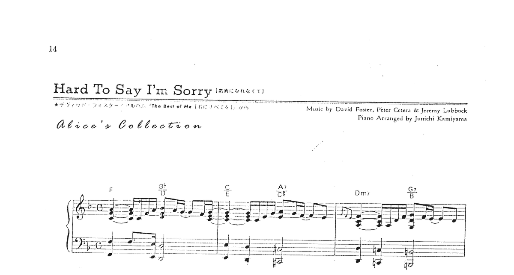
Top of the printed page, excerpt. The full page is not reproduced.
homr 0.7
Right-hand attacks 125
Left-hand attacks 45
Measures 17
Full length at 80 bpm 0:49 MusicXML, first 8 bars · MP3, first 30 s
Transcoda 59M
Right-hand attacks 122
Left-hand attacks 112
Measures 24
Full length at 80 bpm 1:13
RH exact agreement with homr 62%
RH precision 71%
Longest exact run 14
LH exact agreement 80%
LH precision 34% MusicXML, first 8 bars · MP3, first 30 s
LEGATO
Right-hand attacks 102
Left-hand attacks 75
Measures 15
Full length at 80 bpm 0:46
RH exact agreement with homr 57%
RH precision 73%
Longest exact run 10
LH exact agreement 71%
LH precision 48% MusicXML, first 8 bars · MP3, first 30 s
Page 05 printed page 15 · Hard To Say I'm Sorry, page 2 of the piece
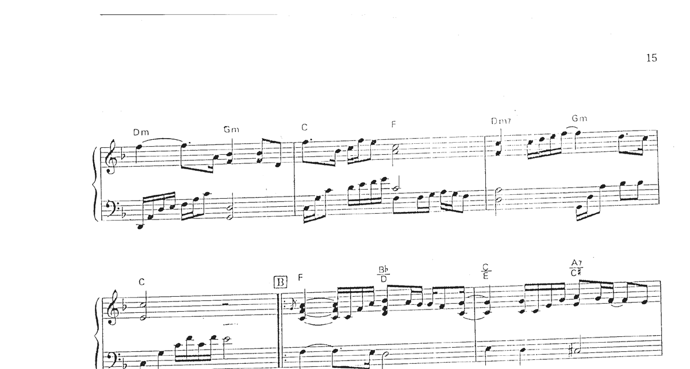
Top of the printed page, excerpt. The full page is not reproduced.
homr 0.7
Right-hand attacks 117
Left-hand attacks 126
Measures 18
Full length at 80 bpm 0:55 MusicXML, first 8 bars · MP3, first 30 s
Transcoda 59M
Right-hand attacks 113
Left-hand attacks 132
Measures 18
Full length at 80 bpm 1:01
RH exact agreement with homr 70%
RH precision 95%
Longest exact run 9
LH exact agreement 94%
LH precision 94% MusicXML, first 8 bars · MP3, first 30 s
LEGATO
Right-hand attacks 103
Left-hand attacks 104
Measures 18
Full length at 80 bpm 0:54
RH exact agreement with homr 72%
RH precision 79%
Longest exact run 11
LH exact agreement 75%
LH precision 92% MusicXML, first 8 bars · MP3, first 30 s
Page 06 printed page 16 · Hard To Say I'm Sorry, page 3 of the piece
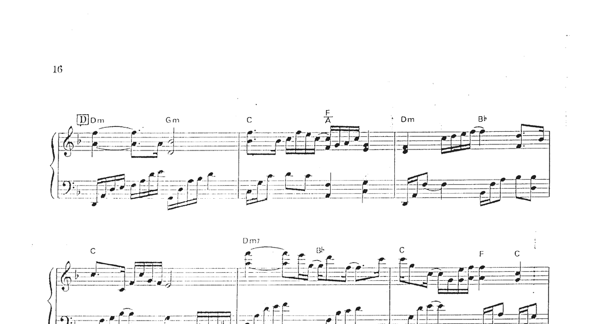
Top of the printed page, excerpt. The full page is not reproduced.
homr 0.7
Right-hand attacks 127
Left-hand attacks 97
Measures 15
Full length at 80 bpm 0:46 MusicXML, first 8 bars · MP3, first 30 s
Transcoda 59M
Right-hand attacks 140
Left-hand attacks 107
Measures 18
Full length at 80 bpm 1:08
RH exact agreement with homr 52%
RH precision 86%
Longest exact run 9
LH exact agreement 90%
LH precision 87% MusicXML, first 8 bars · MP3, first 30 s
LEGATO
Right-hand attacks 140
Left-hand attacks 101
Measures 17
Full length at 80 bpm 0:49
RH exact agreement with homr 79%
RH precision 80%
Longest exact run 15
LH exact agreement 77%
LH precision 78% MusicXML, first 8 bars · MP3, first 30 s
Page 07 printed page 17 · Hard To Say I'm Sorry, page 4 of the piece
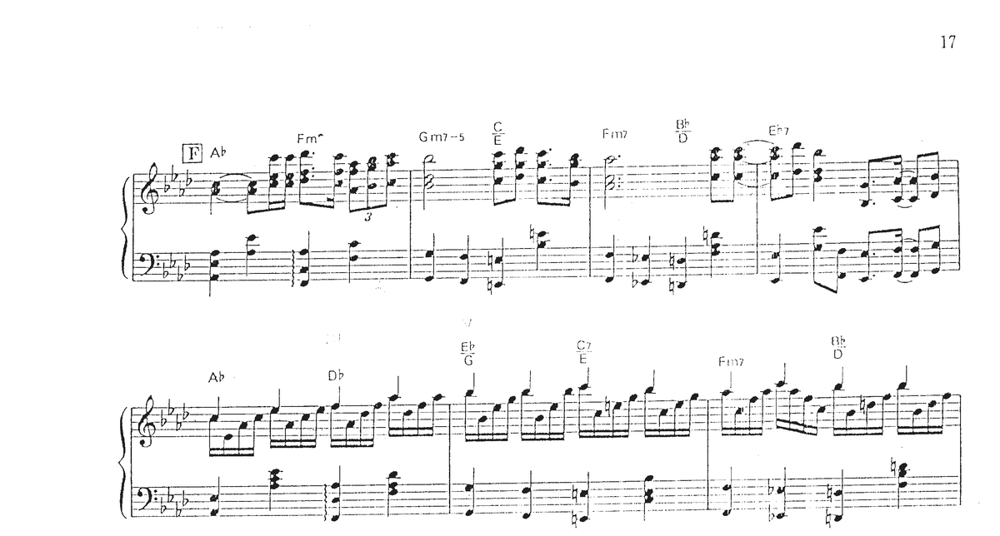
Top of the printed page, excerpt. The full page is not reproduced.
homr 0.7
Right-hand attacks 172
Left-hand attacks 84
Measures 18
Full length at 80 bpm 1:02 MusicXML, first 8 bars · MP3, first 30 s
Transcoda 59M
Right-hand attacks 183
Left-hand attacks 85
Measures 18
Full length at 80 bpm 0:55
RH exact agreement with homr 74%
RH precision 88%
Longest exact run 54
LH exact agreement 93%
LH precision 98% MusicXML, first 8 bars · MP3, first 30 s
LEGATO
Right-hand attacks 171
Left-hand attacks 82
Measures 18
Full length at 80 bpm 1:03
RH exact agreement with homr 70%
RH precision 72%
Longest exact run 26
LH exact agreement 67%
LH precision 72% MusicXML, first 8 bars · MP3, first 30 s
Page 26 printed page 36 · Love Theme from St. Elmo's Fire, page 1 of the piece
Music by David Foster. Piano arrangement by Shiori Aoyama. © 1985 Foster Frees Music Inc., Gold Horizon Music Corp., Golden Torch Music Corp. and Polythemus Music; rights for Japan Warner Bros. Music (Japan) Inc., Nichion, Inc. and Taiyo Music, Inc.
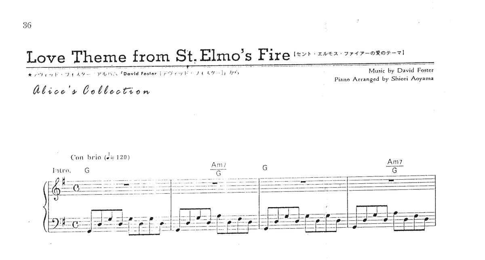
Top of the printed page, excerpt. The full page is not reproduced.
homr 0.7
Right-hand attacks 46
Left-hand attacks 127
Measures 16
Full length at 80 bpm 0:48 MusicXML, first 8 bars · MP3, first 30 s
Transcoda 59M
Right-hand attacks 159
Left-hand attacks 46
Measures 20
Full length at 80 bpm 1:00
RH exact agreement with homr 43%
RH precision 16%
Longest exact run 3
LH exact agreement 0%
LH precision 39% MusicXML, first 8 bars · MP3, first 30 s
LEGATO
Right-hand attacks 48
Left-hand attacks 132
Measures 18
Full length at 80 bpm 0:51
RH exact agreement with homr 83%
RH precision 81%
Longest exact run 12
LH exact agreement 52%
LH precision 55% MusicXML, first 8 bars · MP3, first 30 s
Page 27 printed page 37 · Love Theme from St. Elmo's Fire, page 2 of the piece
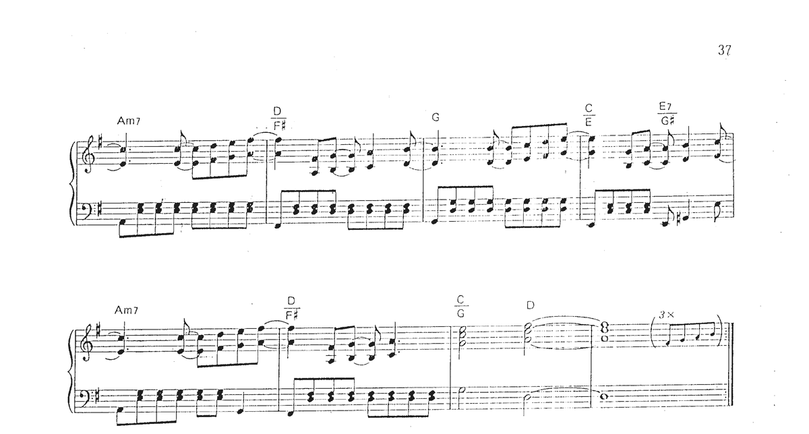
Top of the printed page, excerpt. The full page is not reproduced.
homr 0.7
Right-hand attacks 91
Left-hand attacks 111
Measures 23
Full length at 80 bpm 1:08 MusicXML, first 8 bars · MP3, first 30 s
Transcoda 59M
Right-hand attacks 86
Left-hand attacks 110
Measures 22
Full length at 80 bpm 1:06
RH exact agreement with homr 36%
RH precision 94%
Longest exact run 4
LH exact agreement 96%
LH precision 98% MusicXML, first 8 bars · MP3, first 30 s
LEGATO
Right-hand attacks 98
Left-hand attacks 113
Measures 22
Full length at 80 bpm 1:13
RH exact agreement with homr 84%
RH precision 86%
Longest exact run 35
LH exact agreement 92%
LH precision 92% MusicXML, first 8 bars · MP3, first 30 s
Page 28 printed page 38 · Love Theme from St. Elmo's Fire, page 3 of the piece
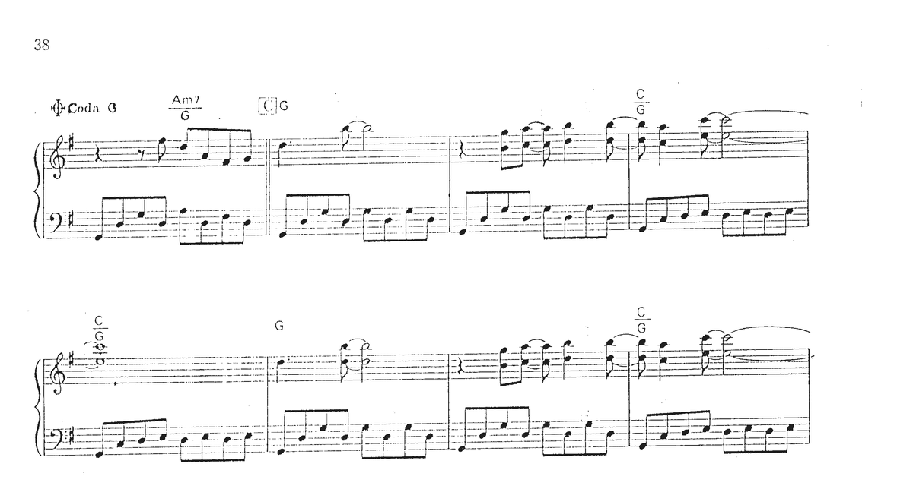
Top of the printed page, excerpt. The full page is not reproduced.
homr 0.7
Right-hand attacks 99
Left-hand attacks 137
Measures 21
Full length at 80 bpm 1:03 MusicXML, first 8 bars · MP3, first 30 s
Transcoda 59M
Right-hand attacks 98
Left-hand attacks 137
Measures 21
Full length at 80 bpm 1:03
RH exact agreement with homr 33%
RH precision 90%
Longest exact run 6
LH exact agreement 97%
LH precision 98% MusicXML, first 8 bars · MP3, first 30 s
LEGATO
Right-hand attacks 99
Left-hand attacks 139
Measures 22
Full length at 80 bpm 1:07
RH exact agreement with homr 70%
RH precision 83%
Longest exact run 16
LH exact agreement 89%
LH precision 90% MusicXML, first 8 bars · MP3, first 30 s
Page 29 printed page 39 · Theme from The Color Purple, page 1 of the piece
Music by Quincy Jones, Rod Temperton and Jeremy Lubbock. Piano arrangement by Shiori Aoyama. © 1986 WB Music Corp., Rodsongs and Brockman Music; rights for Japan Warner Bros. Music (Japan) Inc. and Nichion, Inc.
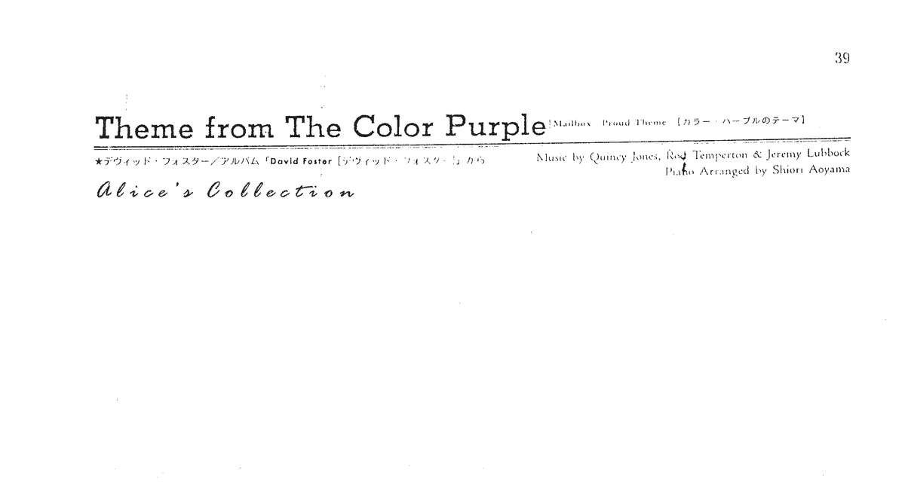
Top of the printed page, excerpt. The full page is not reproduced.
homr 0.7
Right-hand attacks 36
Left-hand attacks 55
Measures 12
Full length at 80 bpm 0:37 MusicXML, first 8 bars · MP3, first 30 s
Transcoda 59M
Right-hand attacks 63
Left-hand attacks 97
Measures 21
Full length at 80 bpm 1:12
RH exact agreement with homr 78%
RH precision 46%
Longest exact run 11
LH exact agreement 95%
LH precision 55% MusicXML, first 8 bars · MP3, first 30 s
LEGATO ran away to the token cap
Right-hand attacks 32
Left-hand attacks 0
Measures 24
Full length at 80 bpm 1:10
RH exact agreement with homr 56%
RH precision 70%
Longest exact run 7
LH exact agreement 0%
LH precision 0% MusicXML, first 8 bars · MP3, first 30 s
Page 30 printed page 40 · Theme from The Color Purple, page 2 of the piece
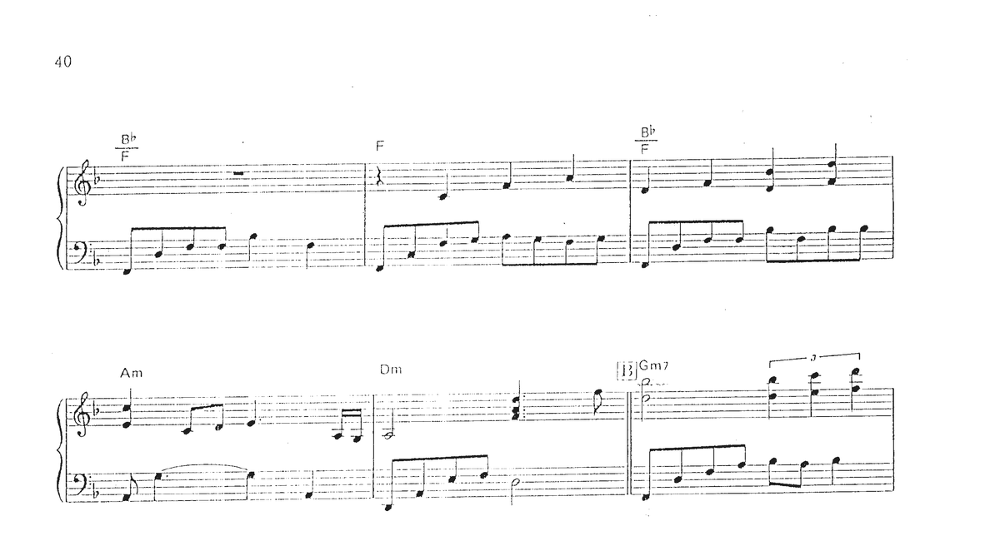
Top of the printed page, excerpt. The full page is not reproduced.
homr 0.7
Right-hand attacks 58
Left-hand attacks 97
Measures 17
Full length at 80 bpm 0:53 MusicXML, first 8 bars · MP3, first 30 s
Transcoda 59M
Right-hand attacks 56
Left-hand attacks 97
Measures 17
Full length at 80 bpm 0:51
RH exact agreement with homr 88%
RH precision 91%
Longest exact run 26
LH exact agreement 94%
LH precision 95% MusicXML, first 8 bars · MP3, first 30 s
LEGATO
Right-hand attacks 65
Left-hand attacks 107
Measures 19
Full length at 80 bpm 0:59
RH exact agreement with homr 69%
RH precision 68%
Longest exact run 10
LH exact agreement 77%
LH precision 73% MusicXML, first 8 bars · MP3, first 30 s
Page 31 printed page 41 · Theme from The Color Purple, page 3 of the piece
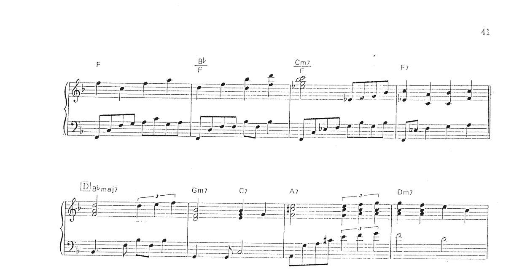
Top of the printed page, excerpt. The full page is not reproduced.
homr 0.7
Right-hand attacks 68
Left-hand attacks 92
Measures 19
Full length at 80 bpm 1:00 MusicXML, first 8 bars · MP3, first 30 s
Transcoda 59M
Right-hand attacks 64
Left-hand attacks 94
Measures 19
Full length at 80 bpm 0:58
RH exact agreement with homr 85%
RH precision 92%
Longest exact run 16
LH exact agreement 96%
LH precision 95% MusicXML, first 8 bars · MP3, first 30 s
LEGATO
Right-hand attacks 72
Left-hand attacks 100
Measures 19
Full length at 80 bpm 1:35
RH exact agreement with homr 79%
RH precision 79%
Longest exact run 10
LH exact agreement 79%
LH precision 91% MusicXML, first 8 bars · MP3, first 30 s
Page 32 printed page 42 · Theme from The Color Purple, page 4 of the piece
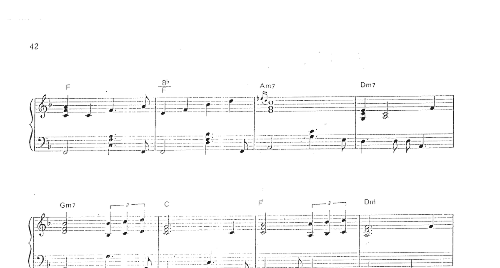
Top of the printed page, excerpt. The full page is not reproduced.
homr 0.7
Right-hand attacks 50
Left-hand attacks 35
Measures 15
Full length at 80 bpm 0:50 MusicXML, first 8 bars · MP3, first 30 s
Transcoda 59M
Right-hand attacks 66
Left-hand attacks 63
Measures 20
Full length at 80 bpm 1:00
RH exact agreement with homr 67%
RH precision 60%
Longest exact run 15
LH exact agreement 94%
LH precision 52% MusicXML, first 8 bars · MP3, first 30 s
LEGATO ran away to the token cap
Right-hand attacks 345
Left-hand attacks 0
Measures 87
Full length at 80 bpm 4:29
RH exact agreement with homr 60%
RH precision 14%
Longest exact run 9
LH exact agreement 0%
LH precision 0% MusicXML, first 8 bars · MP3, first 30 s
Page 33 printed page 43 · Theme from The Color Purple, page 5 of the piece
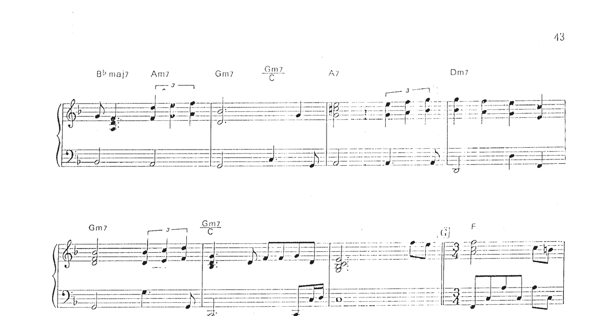
Top of the printed page, excerpt. The full page is not reproduced.
homr 0.7
Right-hand attacks 71
Left-hand attacks 70
Measures 20
Full length at 80 bpm 0:55 MusicXML, first 8 bars · MP3, first 30 s
Transcoda 59M
Right-hand attacks 71
Left-hand attacks 72
Measures 21
Full length at 80 bpm 0:51
RH exact agreement with homr 83%
RH precision 90%
Longest exact run 30
LH exact agreement 94%
LH precision 96% MusicXML, first 8 bars · MP3, first 30 s
LEGATO
Right-hand attacks 74
Left-hand attacks 71
Measures 20
Full length at 80 bpm 1:09
RH exact agreement with homr 79%
RH precision 76%
Longest exact run 13
LH exact agreement 83%
LH precision 84% MusicXML, first 8 bars · MP3, first 30 s
Page 82 printed page 92 · Water Fountain, page 1 of the piece
Music by David Foster, from the soundtrack of The Secret of My Success. Piano arrangement by Shiori Aoyama. © Music Corporation of America, Inc.; rights for Japan MCA Music and Nichion, Inc.
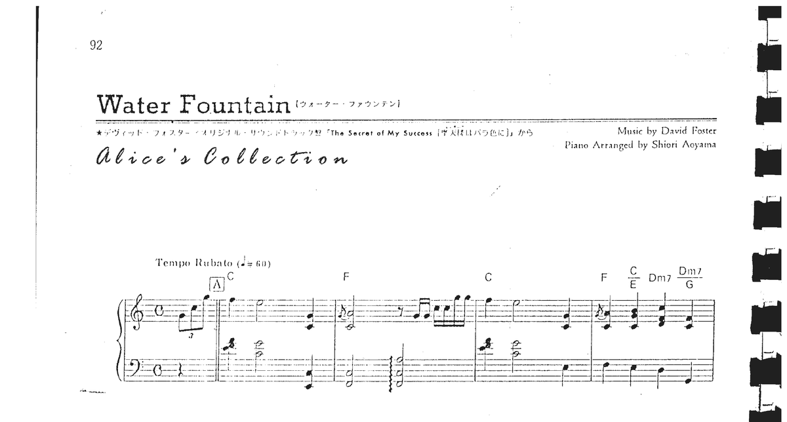
Top of the printed page, excerpt. The full page is not reproduced.
homr 0.7
Right-hand attacks 64
Left-hand attacks 51
Measures 17
Full length at 80 bpm 0:49 MusicXML, first 8 bars · MP3, first 30 s
Transcoda 59M ran away to the token cap
Right-hand attacks 5
Left-hand attacks 0
Measures 196
Full length at 80 bpm 9:48
RH exact agreement with homr 8%
RH precision 100%
Longest exact run 1
LH exact agreement 0%
LH precision 0% MusicXML, first 8 bars · MP3, first 30 s
LEGATO ran away to the token cap
Right-hand attacks 218
Left-hand attacks 0
Measures 63
Full length at 80 bpm 3:02
RH exact agreement with homr 69%
RH precision 26%
Longest exact run 11
LH exact agreement 0%
LH precision 0% MusicXML, first 8 bars · MP3, first 30 s
Page 83 printed page 93 · Water Fountain, page 2 of the piece
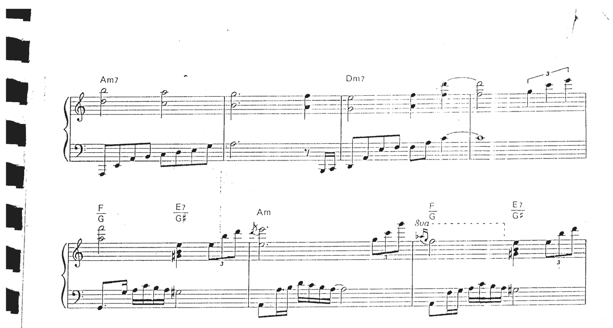
Top of the printed page, excerpt. The full page is not reproduced.
homr 0.7
Right-hand attacks 73
Left-hand attacks 68
Measures 19
Full length at 80 bpm 0:57 MusicXML, first 8 bars · MP3, first 30 s
Transcoda 59M collapsed
Right-hand attacks 0
Left-hand attacks 0
Measures 1
Full length at 80 bpm 0:03
RH exact agreement with homr 0%
RH precision 0%
Longest exact run 0
LH exact agreement 0%
LH precision 0% MusicXML, first 8 bars · MP3, first 30 s
LEGATO
Right-hand attacks 72
Left-hand attacks 71
Measures 19
Full length at 80 bpm 1:18
RH exact agreement with homr 85%
RH precision 94%
Longest exact run 22
LH exact agreement 93%
LH precision 93% MusicXML, first 8 bars · MP3, first 30 s
Page 92 printed page 102 · Katie's Theme, page 1 of the piece
Music by David Foster, from the soundtrack of Stealing Home. Piano arrangement by Asako Tanaka. © 1988 Warner-Tamerlane Publishing Corp.; rights for Japan Warner Bros. Music (Japan) Inc. and Nichion, Inc.
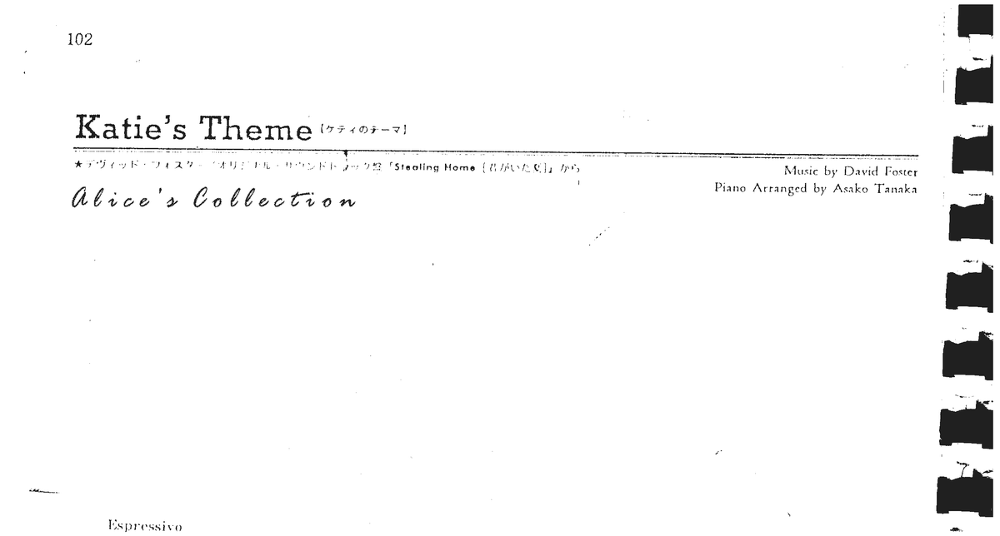
Top of the printed page, excerpt. The full page is not reproduced.
homr 0.7 read one staff only; the agreement numbers for this page compare against an incomplete reference
Right-hand attacks 17
Left-hand attacks 0
Measures 10
Full length at 80 bpm 0:25 MusicXML, first 8 bars · MP3, first 30 s
Transcoda 59M ran away to the token cap
Right-hand attacks 32
Left-hand attacks 0
Measures 122
Full length at 80 bpm 6:22
RH exact agreement with homr 0%
RH precision 3%
Longest exact run 0
LH exact agreement n/a
LH precision n/a MusicXML, first 8 bars · MP3, first 30 s
LEGATO
Right-hand attacks 61
Left-hand attacks 34
Measures 15
Full length at 80 bpm 0:39
RH exact agreement with homr 12%
RH precision 20%
Longest exact run 1
LH exact agreement n/a
LH precision n/a MusicXML, first 8 bars · MP3, first 30 s
Page 93 printed page 103 · Katie's Theme, page 2 of the piece
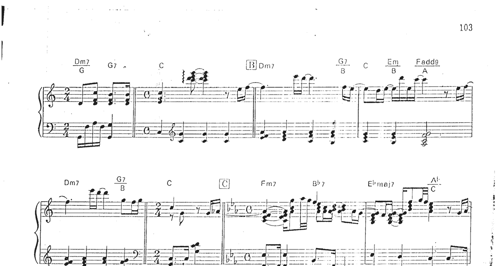
Top of the printed page, excerpt. The full page is not reproduced.
homr 0.7
Right-hand attacks 140
Left-hand attacks 118
Measures 19
Full length at 80 bpm 1:02 MusicXML, first 8 bars · MP3, first 30 s
Transcoda 59M
Right-hand attacks 169
Left-hand attacks 140
Measures 24
Full length at 80 bpm 1:10
RH exact agreement with homr 36%
RH precision 66%
Longest exact run 5
LH exact agreement 24%
LH precision 44% MusicXML, first 8 bars · MP3, first 30 s
LEGATO ran away to the token cap
Right-hand attacks 130
Left-hand attacks 107
Measures 42
Full length at 80 bpm 1:06
RH exact agreement with homr 55%
RH precision 62%
Longest exact run 10
LH exact agreement 55%
LH precision 60% MusicXML, first 8 bars · MP3, first 30 s
Sources: homr 0.7, Transcoda 59M zero-shot (HF btrkeks/transcoda-59M-zeroshot-v1, beam 3), LEGATO (HF guangyangmusic/legato, beam 10, 2,048-token limit). Grader and conversion: experiment 028, October 24, 2026. Excerpts only: page tops, eight bars and thirty seconds, shown for research commentary on the readers; the compositions and arrangements remain the property of the rights holders credited above, and nothing here is for redistribution. All five pieces are from David Foster special selection, Piano Solo (Alice's Collection, Doremi Music Publishing).